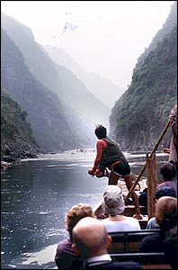

Yangzi River
The Yangzi is the longest river in China and the third longest river in the world. It is known as Chang Jiang which literally translates as 'Long River'. It emerges in the Tibetan plateau in the far west of China, and flows through to Shanghai on the east coast. It is a very important trade route.

|